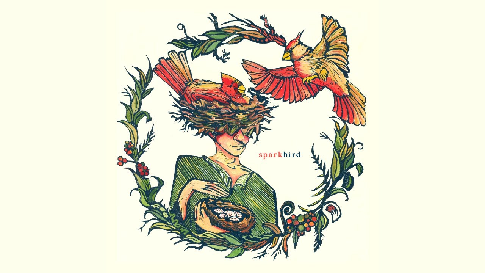

Sparkbird - an Ode to Curiosity
About the restless artist, and the ever-evolving dream
05/03/2025
At the end of last year, I was looking over my Spotify Wrapped, and through a collection of individual moments and memories, and days of hyperfixation where looping one song caused it to rank chart-toppingly high, one song in particular was resonating with me. That song was Sparkbird, by the artist Sparkbird, and I’d like to talk a bit about how it made me feel here. (Here's a few links!)
This song, to me, captures the inherent nature of creativity and inspiration, and speaks it so perfectly in my own language. I’m not particularly a music theorist, so I’ll mostly be talking about the lyrics, but I want to touch on the instrumental first. I adore all of flitting, plucking sounds, and the buzzing strings that feel like ideas fizzing, sparkling, overflowing from a freshly-poured glass - it paints this picture of thoughts re-emerging from where they laid dormant, of delicate pastel colours being cautiously yet excitedly filling the room. It sounds playful, and best of all, curious.
I am an inherently curious person - my desire to discover is one of my most known traits - and I have long spent my life embracing that curiosity through art, waltzing from inspiration to inspiration, in an attempt to use this part of me to uncover more buried, unknown parts of me. This song speaks to the curious side of me, that side of me that looks in every car glove compartment to see the stories they hold, that eagerly peers down every back alley to see what light awaits - and it uses this curiosity to express the artist’s relationship with the world, their passions, and the art they have once and continue to create.
I had never heard of the term “spark bird” before I started to write this essay, but I had always inherently got what the song was about - how a renewed passion, or vision, rekindles a love for creating and for making - but learning about the meaning of the term really just completed my love for the song, and also made me inherently excited about the spirit and community of birding (which, I assume, was part of the song’s purpose in the first place, to inspire others to bird).
In birding, a “spark bird” is a term used to refer to the bird that got them interested in birding - which is just… such a beautiful term. So wonderfully captures that core memory formed when you discover a new passion, and it leads to such distinct tales being told, reminiscing upon how you fell into love with an aspect of yourself. I’ve never really explored the idea of birding, but hopefully everyone can tell that all of this comes with the inherent respect, appreciation and most of all curiosity for the craft.
There are so many spectacular lyrics in this song, ones that I endlessly repeat to Mars and back due to their sheer distinction. The word choice is so precise and elegant, weaving an interface blanket of diction in front of my ears that wraps itself comfortably around my mind. This is a trait common to all of Sparkbird’s music, and I obviously can’t cover every instance, but there are specific lyrics that distinctly sit with me.
“Every smile line on my face can be retraced down to the split second, down to the split place.”
I love how the song expresses that each memory we hold as humans leaves a physical impression - that even when we don’t consciously remember every moment, our face, body and mind are crafting pathways which lead us back to those special times. When you hear a song, it reminds you of a place, of a person - and I can always remember the exact moment when I first heard a song I love. I first heard Sparkbird last March, on the beach of Portobello at night - under that little table umbrella as the road turns back in towards Edinburgh. I could feel the end of winter, and as such - this song inherently feels like spring; of new horizons and adventures opening up.
“I'm growing up, up, up, against my will, will…”
In life, I carry myself with the curiosity of a child discovering the world for the first time, where any scenario can be something magical - and I’m often worried that this nature goes against the competency of adulthood. That I have to be seen as Serious to be Taken Seriously. If my art and world-view is exploratory and silly, that I am, in turn, a child. But the truth is that I take everything seriously, and live incredibly passionately for my art. I wear so many hats, and redefine myself in so many ways - out of hope of portraying a smidgen on myself through the interpretable lens of adulthood. Over time, all I’ve hoped is that I can keep that childish foot of mine wedged in the Door of Reality - so that others can peek through and understand that I am, and my art is, compatible with both sides.
To create art is to be alive - to be human. It is as natural of a method of communication as language and movement, at least to me. When I had no idea where to go, when I had lost all direction and hope in my life - I found myself through following the works of others, and fumbling my way through the creation of my own. Whether good or bad, that art was - which was enough. If my art existed, then I could find myself through it, like a confused, unknown hall of mirrors.
When I have been at my most disconnected from creating art, and therefore from myself, connecting with nature will always find me a route back. I’ll walk into the hills, I’ll submerge my hands in the dirt, I’ll glide my hands along a riverbank. If I can feel that the world keeps turning, then I can restart my own spin. And I have definitely felt duller and unspun recently, which turned me back to Sparkbird once again - to remind myself of that cerebral spark.
“Sparks fly every time I visit this park - I envision the phantom of a giddy little cartoon me. Jittering on the electrifying cusp of discovery: before and after the storm, all I wanted was to be seen.”
Sparkbird speaks so thoroughly to this sense of self; to seeing yourself through your own eyes for the first time. To look at yourself through a different lens, and to see that even through times of turbulence, the little version of ourselves that lies beneath the surface is both so much more accomplished than you thought, and so close to accomplishing something new.
Sparkbird speaks to the ever-evolving dream - and specifically the need to have an ever-evolving dream. That the world must continue to turn and form, that we have not discovered all that composes us yet. Life is readily built to divert us into static lanes, to congratulate us when we keep going in the same direction, rather than sitting gears. Ironically, that level of sameness can contribute to a lot of my burnout - and it’s a plateau I feel like I’ve been waddling along as of late. I love how perfectly this song epitomises this feeling of discovering a new passion, and following that branch until it grows into a tree - and the seeds re-pollinate back into our existing garden. Finding a new passion, following it until we re-invent our artistry through it.
The title being Sparkbird holds a double meaning then, as a new world of the artist Stephan Nance recontextualising their passion for music through their passion for birding, and sowing the seeds of a new cycle. “Will you finally resurrect the time I’ve killed?”; the idea that no cost is sunk, and that any passion can be fished out of the well and loved again, as spectacular as it once was; and rejuvenated to be even better than before.
If we are curious, we can turn old to new. We can see entire hidden worlds in the wings of what we already loved. That’s what the song says to me. Right now, it’s inspiring me to write; soon maybe compose, or craft, or just love like I used to, but all new. That rejuvenating curiosity is magical thinking. Or maybe it’s magical realism?
…Or maybe, it’s neither here nor there.